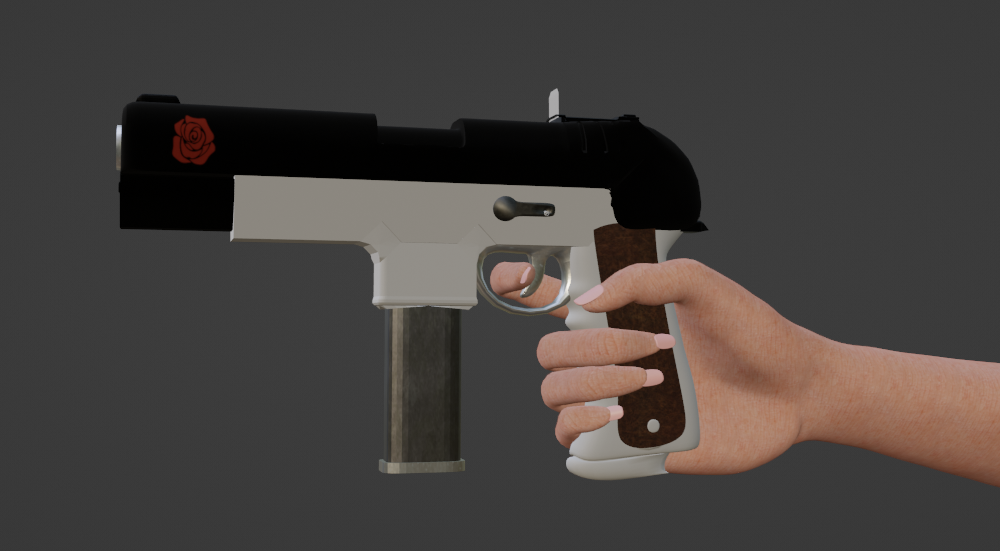

Creating Emma’s hand presented a unique set of challenges. Unlike full-body characters or creatures, a hand demands intimate anatomical fidelity — every curve, tendon, and subtle movement contributes to the illusion of life. The goal was to sculpt a feminine form that felt both delicate and expressive, while maintaining structural integrity for clean rigging and deformation. Achieving a graceful silhouette with natural joint articulation required intense focus on gesture flow, finger topology, and mesh density. The final result is a balance of softness and control: a hand that breathes emotion through motion.